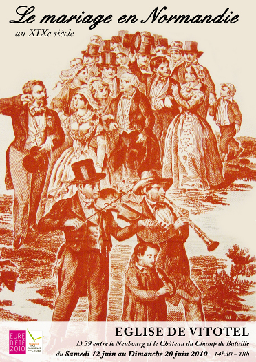

Dans le cadre de "l'Eure d'été"
Exposition en l'église Saint Michel de Vitotel
organisée par "Les amis de Vitotel"
du samedi 12 juin au dimanche 20 juin 2010
"Le mariage en Normandie au XIXème siècle"
Thème : les costumes de noces, les coiffes, les trousseaux, les contrats de mariage, les cadeaux.
